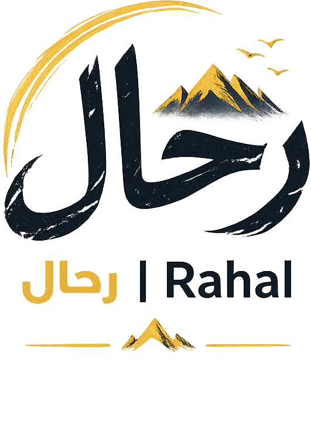

العلوم
أسئلة علمية تغير نظرتنا إلى العالم
رحلة لفهم الاكتشافات والأفكار التي توسع آفاق المعرفة.

مساحة للمعرفة والفضول، نروي فيها قصص الإنسان والمكان والعلم والتاريخ.
اكتشف رحال
وراء الأزقة والأبواب العتيقة حكايات أجيال كاملة. كيف تحفظ المدن ذاكرتها؟ وماذا نفقد عندما تتغير ملامحها؟
اكتشف المزيد
رحلة لفهم الاكتشافات والأفكار التي توسع آفاق المعرفة.

قراءة في أحداث وشخصيات صنعت ملامح الحاضر.

من الطبيعة إلى الأماكن البعيدة، نقترب من العالم بفضول.